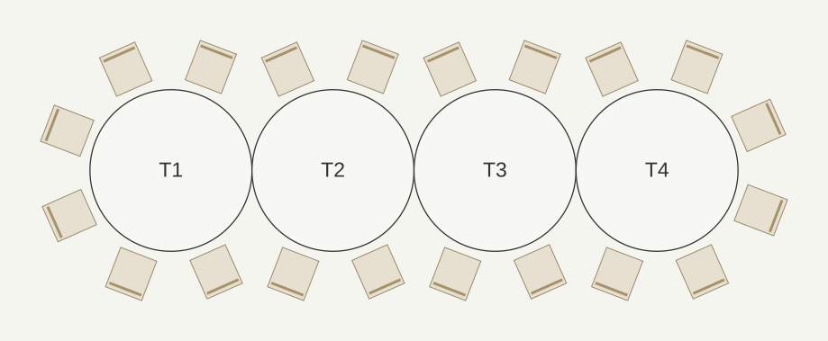
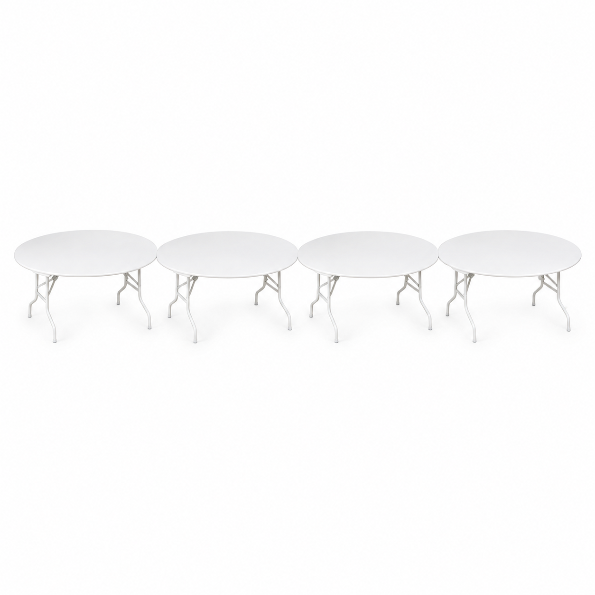

Вариант 02
Цепочка из четырёх столов

Открыть схему крупно ↗20мест по схеме
- Столы Ø180 см
- 4 шт.
- Скатерти «Альфа» Ø330
- 4 шт.
- Стулья «Марсель»
- 20 шт.
- Вся мебель со стульями
- ≈ 8,4 × 3,0 м
- Только столы
- 7,2 × 1,8 м
Подходит для вытянутого пространства. На каждом столе отдельная скатерть. Места у соединений исключены.
Скачать схему PNG ↓
Каталожный комплект без стульев

Скачать изображение PNG ↓Визуализация по каталожному фото. Количество и габариты указаны на схеме.